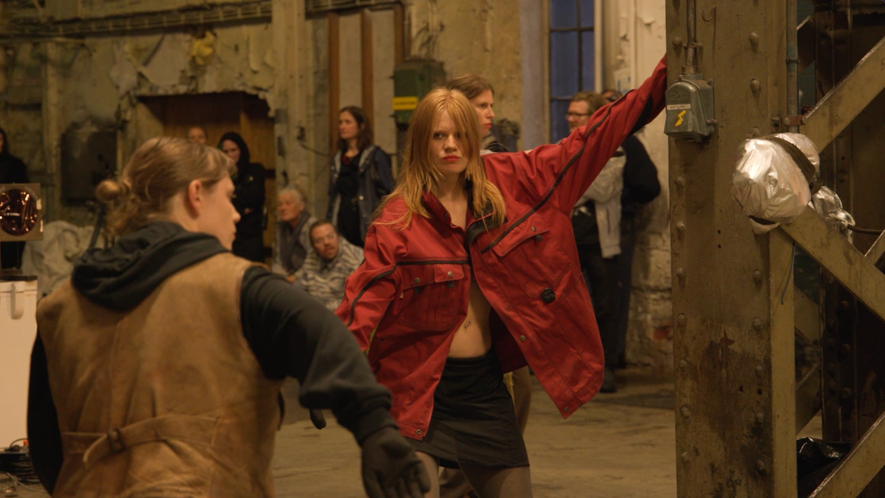
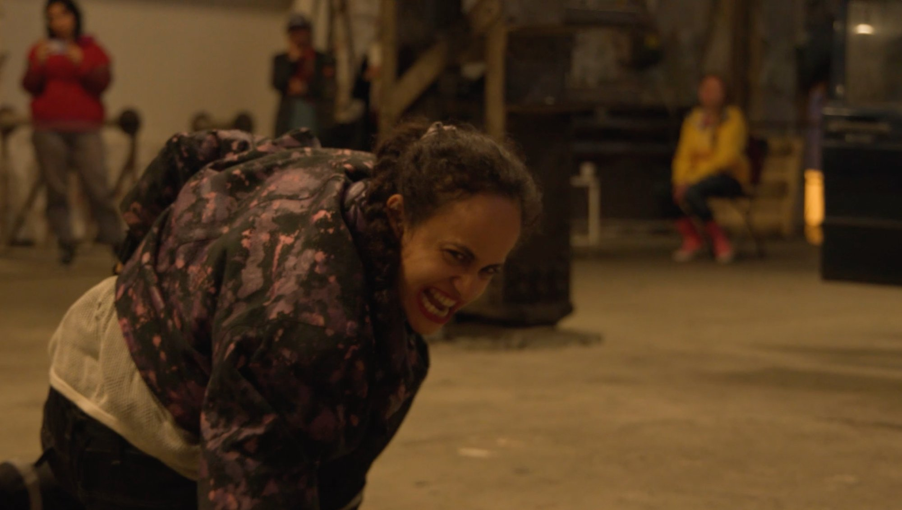
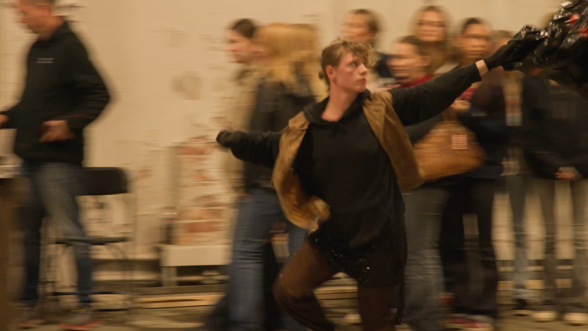
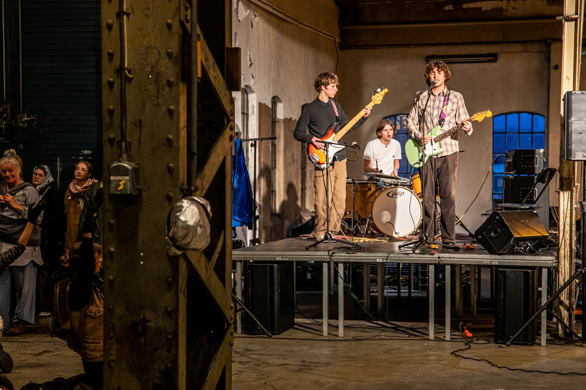
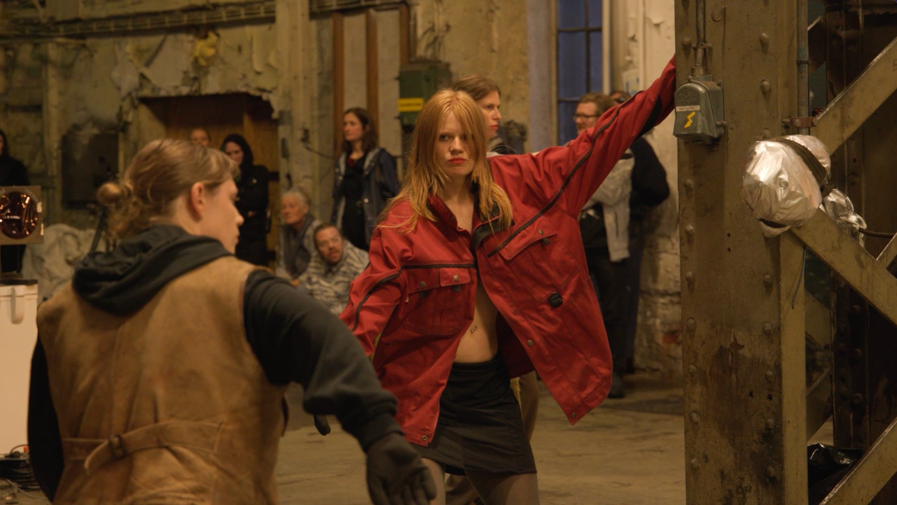
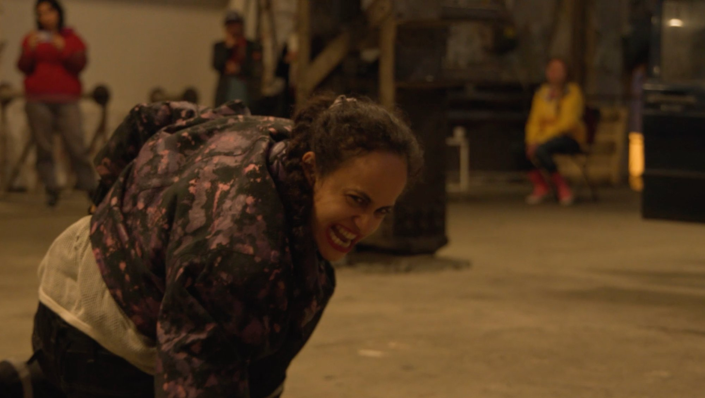
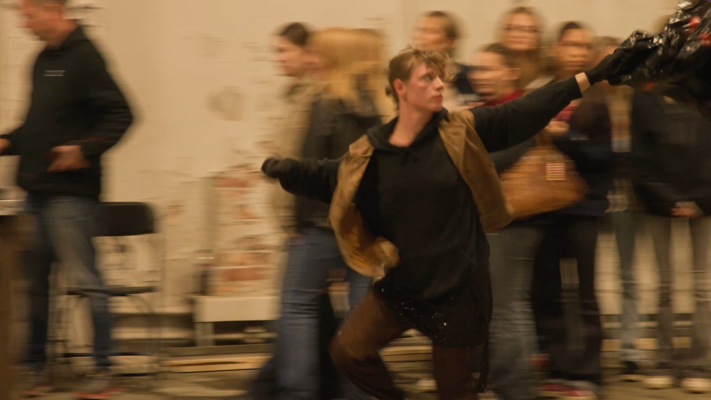
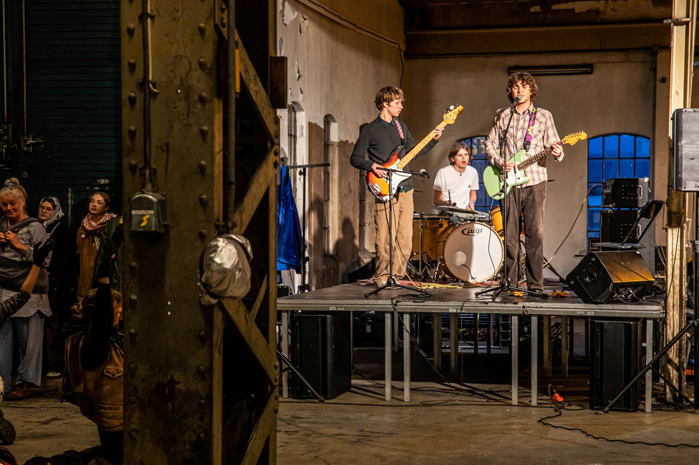

Scene:Bluss – The Hellmouth Edition is a two week long residency that will end in an immersive, durational performance. The project is based on the TV-series Buffy the Vampire Slayer. The small town Porsgrunn will become Sunnydale. We will be the Scooby-gang, the demons, the helpers and the betrayers in producing a total art piece. The Bronze and the unknown that will devour from beneath.
Alongside director Marie Nikazm Bakken, leading costume designer Fredrik Floen and leading sound designer Patsy Lassbo, we will select 12 participants. This residency is an occasion for you to reflect on your performance fantasies through the lens of a collective project framed by a theme and a group of organizers. We want to think together by working together and work together by thinking together.
We, Alexandra, Marie, Patsy, Marie and Fredrik are keen on producing an over the top, immersive art experience. This summer we invite you to step into the Buffyverse. We will make a durational performance based on what serialised narration entails, based on what the episode format can offer. We will build weapons, throw curses, incarnate demons, make a musical, a silent movie and die repeatedly.
Scene:Bluss - The Hellmouth Edition is a project that aims at saying yes to more than what is graspable and to have fun while working hard. Our aim is to bring this project towards something potentially unpredictable, epic, larger than life. Something literally un-tourable.

This year we organize a series of collective performance and reading events called POSSE. It is open to everyone who wants to participate. We will meet for 4 days to read texts collectively and do stuff together: Read collectively, share dances, go to a karaoke, create a growling choir, learn horse whispering and much much more.
It is an experimental reading and making group. Everyone is welcome, every skill is welcomed. Scene:Bluss POSSE edition will be lead by Tamara Alegre, Chloe Chignell, Lisen Pousette and Klara Utke Acs.
P0$$€ dance and reading is a weekly gathering for people wanting to spend time dancing and reading together. It is an open-ended study circle for practitioners within contemporary dance and other curious ones. Each session is hosted by one or several practitioners that propose the materials: text to read, a way to read the text and dances. The text can be written be artistic, essayistic, philosophical, articles, lyrics, poetry, manifestos, scores. The methods can vary from reading in a circle one by one, to braiding hair, to intimate readings, to speaking through robotic voices. The dances can vary in style: contemporary, modern, reggaeton, body work, formalism, expressive dance, dance-rituals, scores, meditations, writing, questioning, healing, dreaming, for example.
POSSE is engaged with critical practices and with generating discourse through doing.
"The day shows us what we should be and the night what we are" — Roger Ekirch
Det siste året har nesten helt visket ut det allerede svekkede skillet mellom natt og dag, seng og arbeidssted, og produksjon og fritid. Når nattens spesifisiteter blir overtatt av våketidens logikk, hva skjer da med vår tilgang til den eldste veien til den menneskelige psyke, våre drømmer og fantasier? Hvordan kan vi synkronisere oss med nattas krefter?
Bedbug Edition er en to ukers residens i Porsgrunn for scenekunstnere. I år ville vi bruke objektet senga som katalysator for å gå inn i en kollektiv fantasi. Vi ville nærme oss det som utfordrer våketidens kronologi og der paradokser er velkomne.
Residensen besto av en serie workshops, samtaler og eksperimenter som på forskjellige måter produserer materiale til, og leder frem mot en eller flere forestillinger.
Bedbug edition ledes av dramatiker og poet Runa Borch Skolseg, scenograf og kostymedesigner Fredrik Floen, og dansere og koreografer Alexandra Tveit og Marie Ursin. Sammen ville vi utfordre og leke oss med irrasjonelle dramaturgier, bruke søvnløse tilstander til tekstproduksjon og mane frem et sengeteppe stort nok for oss alle — gjennom hallusinatoriske danser, skyggespill, fantasier og mareritt på en nedlagt militærleir i Porsgrunn.
"The day shows us what we should be and the night what we are" — Roger Ekirch
This last year has reduced the already weakened distinction between day and night, bed and workplace, production and leisure. When the specifics of the night are taken over by the logic of wakefulness, what happens to our access to the oldest path to the human psyche, our dreams and fantasies? How can we synchronize with the forces of the night?
Scene:Bluss Bedbug Edition is a two-week performing arts residency in Porsgrunn. It's a place for showing and talking about artistic work; to test out and share ideas through immersive and collective projects. The residency will consist of a series of workshops, conversations and experiments that will produce a diversity of material that ultimately meet an audience.
We will use the bed as a catalyst to access our collective imagination, and find ways to challenge the order of daytime and welcome time paradoxes. Bedbug edition is led by playwright and poet Runa Borch Skolseg, set and costume designer Fredrik Floen, and choreographers and dancers Alexandra Tveit and Marie Ursin. Together we will work with irrational dramaturgies, use slumber states as a source for writing and create a bedspread large enough for all of us. We will let the night lead us through hallucinatory dances, shadow games, fantasies and nightmares.
I år er det klart for workshop med Stina Fors! Hun vil være vår guide for å finne forskjellige ekstreme stemmer i workshopen Guttural Voices.
Workshopen vil fokusere på lekende eksperimentering og å oppdage stemmen som et kraftfullt uttrykksverktøy. Vi vil utforske eksperimentelle stemmeteknikker som knurring, skriking, buktaling og dinosaurrop! Gjennom lekne øvelser og interaktive økter vil vi oppdage de forskjellige stemmene i kroppen vår. Bevegelse vil være vår viktigste kraft til å veilede oss. Denne workshopen er for alle som er interessert i stemmen som et verktøy for kunstnerisk uttrykk, uavhengig av erfaringsnivå. Og den er gratis!
Med sansen for det absurde og merkelige, lager Stina Fors (f. 1989, SE) uforutsigbare og energifylte forestillinger. Som selvlært trommeslager og ekstrem vokalist turnerer Fors med hennes "en-kvinnes-punk-band": Stina Force, hvor ingen forestilling noen gang er lik. A Mouthful of Tongues, hennes nyeste verk, er en magisk og absurd forestilling hvor stemmen virker som den er løsrevet fra kroppen. Gjennom buktaling, growling og dinosaurskrik får vi oppleve skapninger ingen noen tidligere har sett og høre språk ingen snakket før. Fors arbeid er fylt med spenning, vidd og rå kraft. Stina studerte koreografi ved SNDO i Amsterdam, og bor for tiden i Wien, Østerrike.
This year we are ready for Stina Fors to take us on a ride through our guttural voices in the form of a three day workshop!
This workshop focus is on playful experimentation and the discovery of the voice as a powerful tool of expression. Explore extended and experimental voice techniques like the many kinds of growling, screaming, ventriloquism, dinosaur calls and more. Through playful exercises and interactive sessions, we'll discover the diverse voices within our bodies. Movement will be our main force to guide us. This workshop is designed for anyone interested in the voice as a tool for artistic expression, regardless of their level of experience. Wear comfortable clothes and be prepared to engage in physical activities.
With a certain taste for the absurd and strange, Stina Fors crafts unique, once-in-a-lifetime performances. As a self-taught drummer and shocking vocalist, Fors tours with her one-woman-punk-band, Stina Force, a band that must be experienced live—characterized by spontaneity—no two performances are alike. Extended ventriloquism and overtone screams can both be seen and heard in her recent work, A Mouthful of Tongues — a magic show where the voice appears detached from the performer's body. Her work is packed with tension, humor, and raw power. Additionally, she imparts her knowledge, teaching techniques to produce extreme voices like death growls without vocal damage. Stina studied choreography at the SNDO school for new dance development in Amsterdam, currently residing in Vienna, Austria.
Til alle brennende hjerter og svidde begjær, dette er til dere!
"I speak from the darkest night / Pass on, so I can forget"
Velkommen til årets utgave av Scene:Bluss i samarbeid med Agder Teaterlaboratorium! I år skal vi bygge vår egen verden basert på den iranske poeten Forugh Farrokhzad. Hun var en poet av sanselige ekstremer som skrev personlige og kroppslige dikt, som kan minne om å være inne i drømmen til en vill valmue der hun lever ut sin ubønnhørlige intensitet.
Bli med koreografene Roza Moshtaghi og Kristin Helgebostad og lage en forestilling bygget på musikkvideoer, poesi, livemusikk, melodrama og svette. I to uker vil vi utforske Farrokhzads verden og hennes affektive ord, hennes omfavnelse av begjær, hennes empati med hele verden. Ny musikk og tekster basert på Farrokhzads poesi vil bli skrevet til forestillingen og fremført live av 3 forskjellige Porsgrunnsbaserte band!
Moshtaghi og Helgebostad vil utforske tekstene hennes gjennom idéen om live-musikkvideo som koreografi. Med et popkulturelt og kulturhistorisk referansebasseng vil vi gjennom morgenklasser, forelesninger og workshops skape et arbeid som vises ved PIT, Porsgrunn Internasjonale Teaterfestival. I lab'en vil deltakerne være utøvere, lage scenografi, skape kostymer, synge sammen og alt i mellom.
Prosjektet er åpent for alle som er interessert i performance-skaping uavhengig av bakgrunn, alder eller evne.
Du er invitert til en episk tur inn i ilden…
Dear burning hearts and scorched desires, this one's for you
"I speak from the darkest night / Pass on, so I can forget"
Welcome to this new edition of Scene:Bluss in collaboration with Agder Teaterlaboratorium! This year we will build our own world based on the poems of the Iranian poet Forugh Farrokhzad. She was a poet of sensual extremes who wrote personal and bodily poetry, like being inside the dream of a wild poppy where she lived out her relentless intensity.
Join choreographers Roza Moshtaghi and Kristin Helgebostad in creating a performance built from music videos, poetry, live music, melodrama and sweat. During this two-week laboratory, we will explore Farrokhzad's world and her affective words, her embrace of desire, her empathy with the whole world. New music and lyrics based on Farrokhzad's texts will be written for the performance and performed live by 3 different Porsgrunn-based bands!
Moshtaghi and Helgebostad will explore her words through the idea of a live music video as choreography. With a pool of pop-cultural references and cultural history the lab will consist of morning classes, lectures and workshops. We will create a performance that will be shown on the 6th of June at PIT, Porsgrunn International Theater Festival. In the lab, the participants will be performers, create scenography, create costumes, sing together and everything in between.
The project is open to anyone interested in performance-making regardless of background, age or ability.
You are invited to an epic ride into the fire
 






